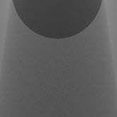
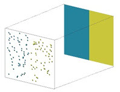

去除噪波
噪波类型
要从渲染中去除噪波，首先要确定噪波的来源。导致噪波的原因包括：
采样不足：
运动模糊
景深
漫反射
镜面反射
阴影
间接镜面反射
透射
SSS
大气体积
其他：
高亮杂点
不遵守能量守恒定律的着色器、网络或设置
噪波大多是由于采样不足而导致的，但增加错误光线的采样不但会延长渲染时间，而且对去除噪波毫无作用。美工人员通常根据渲染时间限制或光线数量开展工作，其目的是尽量高效地分配这些光线，从而以最高效的方式将噪波降至最低。因此，如果必须增加摄影机 (AA) 采样数才能去除 DOF 噪波，为了方便管理渲染时间，必须降低其他设置。但是，如果 DOF 或运动模糊不是关注的重点，则增加摄影机 (AA) 采样数可以修复其他类型的所有噪波，但是也会因不必要的光线而增加渲染时间。
有关去除噪波的操作步骤，请参考去除噪波工作流示意图。
以下场景噪波过多，所有采样均设置为 1。
 |
|
| 所有采样数：1 | 最终采样设置 |
摄影机 (AA) 采样数：1
漫反射采样数：1
镜面反射采样数：1
透射采样数：1
SSS 采样数：1
灯光采样数：1
识别噪波最有效的方法是渲染 AOV。这有助于减少不必要的设置调整，从而节省时间。
AOV
 |
||
| diffuse_direct | diffuse_indirect | specular_direct |
 |
||
| specular_indirect | sss | transmission |
在下面的示例中，采样数为 10 的选项显示的效果更平滑。这是一个非常高的值且仅在此处使用，原因在于：为了演示噪波区域和平滑区域的对比效果，摄影机 (AA) 采样数以及其他所有采样数均被设置为 1。通常，摄影机 (AA) 采样数介于 4-8 之间，因为它充当倍增，所以其他采样数也需要类似的值。
运动模糊和景深噪波
运动模糊噪波出现在移动几何体的轨迹中，而 DOF 噪波则出现在焦点外的区域中。
运动模糊
 |
|
| 所有采样数：1 | 摄影机 (AA) 采样数：10 |
景深
| 摄影机 (AA) 采样数：1 | 摄影机 (AA) 采样数：10 |
通过查看 Alpha 通道是否存在噪波可以同时确认景深和运动模糊。
| 运动模糊 Alpha | 景深 Alpha |
运动模糊和景深噪波是由于摄影机光线不足而导致的，因此只能通过增加摄影机 (AA) 采样数来解决。实际摄影机 (AA) 采样数是这一数字的平方。如果摄影机 (AA) 采样数为 4，则投射的光线数为 16。请注意，增加摄影机 (AA) 采样数也会增加其他采样数，这意味着应减少这些采样数予以补偿。
增加摄影机 (AA) 采样数会对渲染时间产生显著的影响。如果运动模糊或 DOF 不是问题所在，则在修复其他噪波类型时应最后考虑摄影机 (AA) 采样数。
漫反射噪波
| 所有采样数：1 | 漫反射采样数：10。 |
间接漫反射噪波是一种常见的噪波。确认是否为此类噪波最简单的方法是检查间接漫反射 AOV。另一种方法是将漫反射采样数设置为 0，这会禁用间接漫反射。如果噪波消失，则表示噪波是由间接漫反射造成的。
当漫反射采样数大于 0 时，与漫反射曲面相交的摄影机光线会发射间接漫反射光线。这些光线在半球形扩散范围内沿着随机方向发射。如果光线数量不足，则无法解算环境中的值范围，从而导致出现噪波。通过增加漫反射采样数即可去除该噪波。
镜面反射噪波
| 所有采样数：1 | 镜面反射采样数：10 |
当 specular_roughness 参数 > 0 时，会出现间接镜面反射噪波。确认是否为此类噪波最简单的方法是检查间接镜面反射 AOV。另一种方法是将镜面反射采样数设置为 0，这会消除模糊反射。如果噪波消失，则表示噪波是由间接镜面反射造成的。
间接镜面反射噪波是由于镜面反射采样数不足造成的。这些采样数控制在计算按镜面反射 BRDF 加权的半球上累计的反射间接辐射时发射的光线数。精确的光线数是此值的平方。增加此值可减少间接镜面反射噪波。请记住，采样操作针对每个摄影机 (AA) 采样执行，因此，摄影机 (AA) 采样数和镜面反射采样数的值都较高时，往往会降低渲染速度。
透射噪波
| 所有采样数：1 | 透射采样数：10。所有其他采样数：1。 |
在 specular_roughness > 0 的透明对象的模糊折射中，透射噪波非常明显。对此进行确认最简单的方法是检查透射 AOV。另一种方法是将透射采样数设置为 0，这会消除模糊折射。如果噪波消失，则表示噪波是由透射造成的。
透射噪波是由于透射采样数不足造成的。透射采样数控制用于模拟基于微面的光泽折射求值的采样数。精确的光线数是此值的平方。增加此值可减少使用透射的着色器中的噪波。
SSS 噪波
| 所有采样数：1 | SSS 采样数：10 |
次表面散射 (SSS) 噪波将出现在使用已启用 SSS 的 standard_surface 着色器的曲面上。要进行确认，请检查 SSS AOV。可以通过增加 SSS 采样数去除 SSS 噪波。
直接镜面反射和阴影噪波
直接镜面反射和阴影中的噪波是由于灯光采样数不足造成的。通常，去除直接镜面反射噪波需要少量的采样数，而去除阴影噪波则可能需要更多的采样数。光源的半径越大，阴影就会越柔和，因此去除阴影噪波所需的采样数也就越多。
| 灯光采样数：1 | 灯光采样数：10 |
 |
|
| 灯光采样数：1 | 灯光采样数：10 |
3-4 之间的灯光采样数足以满足大多数场景的需要。
阴影噪波通常混杂着间接漫反射噪波，特别是对于半径较大的灯光，因为其阴影会更柔和。观察 direct_diffuse AOV，看看阴影是否出现噪波。或者将漫反射采样数和镜面反射采样数设置为 0。这会消除全局照明 (GI)，使您可以挑出直接照明的贡献。识别直接镜面反射噪波并非易事，因为它可能会被误认为是间接镜面反射噪波。直接镜面反射是灯光本身在曲面上的反射。这应当有助于根据颜色和强度将其与周围对象的反射区分开。
噪波也可能出现在薄几何体的镜面反射高光上，这些高光使用 specular_weight 值较大的着色器。增加摄影机 (AA) 采样数有助于将此效果缩小到一个点。但是，即便摄影机 (AA) 采样数较高，也有可能会出现抗锯齿瑕疵。增加 specular_roughness 值有助于减少这类噪波。在这些情况下，增加灯光大小并降低灯光强度也会有所帮助。
| 镜面反射粗糙度：0.2 | 镜面反射粗糙度：0.5 |
大气散射噪波
|  | |
| 所有采样数：1 | 大气体积采样数：10 |
一束光的阴影区域中会出现 atmosphere_volume 噪波。此噪波是由于 atmosphere_volume 着色器中的采样数不足造成的。采样根据体积密度进行分布。提高采样数可以优化解决方案的质量。
高亮杂点和火花
高亮杂点（明亮的“尖峰型”噪波）通常是由强光在闪耀的低粗糙度光泽曲面上反射而生成的。通常，一个最终像素颜色会有数百个采样参与其中。如果其中一个采样是值较高的镜面反射光线（来自于强光的反射），那么将会有许多具有较低值的采样和一个具有异常高值（达数千）的采样。这一采样会使整个像素变为白色（“高亮杂点”）。
区间限定
采样区间限定有助于消除这种噪波。如果您对高采样值进行区间限定，单个偏离采样这时将会稀释，并且不会对最终颜色产生太大影响。但是，这将影响渲染的最终动态范围。请谨慎使用。
灯光衰退过滤器
从非常明亮的聚光区提供的间接漫反射照明也可能会导致高亮杂点，尤其是当光源非常接近（甚至接触）邻近几何体（如灯箱或灯罩）时。灯光中的平方反比衰退会使那些邻近曲面极其明亮。解决方法是添加近距开始值非常低的灯光衰退过滤器，从而避免采样过分接近灯光。同样，这应谨慎使用。
其他注意事项
- 噪波可能来自渲染中不可见的因素（在摄影机的后面）。
- 不遵守能量守恒定律的着色器、网络或设置可能会导致/加剧噪波。
- 减少噪波的另一种方法是消除噪因并使用特殊灯光进行虚设。例如，某个仅由反弹光照亮其面部的角色：添加特定的反弹光会明显减少噪波。
- 如果知道灯光所在的位置，Arnold 可以直接对灯光采样，从而轻松去除噪波。但是，如果没有将某些明亮的“带方向性的”面片标记为可对场景照明产生显著影响的灯光，将会产生问题。
清晰渲染
未使用 DOF
摄影机 (AA) 采样数：7，漫反射采样数：3，镜面反射采样数：2，透射采样数：6，sss 采样数：4，灯光采样数：3。
使用 DOF
摄影机 (AA) 采样数：15，漫反射采样数：1，镜面反射采样数：1，透射采样数：4，sss 采样数：3，灯光采样数：3。
尝试在渲染中识别噪波时，渲染和查看 AOV 会很有用。这样，您可以隔离噪波类型并调整相关采样数。下表中提供了用于识别常见噪波类型并确定其优先顺序的一般性指导。请注意，这是一般性指导，每个场景各不相同。
| 噪波在以下各项中可见 | 要调整的采样数 |
|---|---|
| Alpha 通道 | 摄影机 (AA) 采样数 |
| 间接漫反射 | 漫反射采样数 |
| 直接镜面反射（镜面反射噪波） | 灯光采样数 |
| 直接漫反射（阴影噪波） | 灯光采样数 |
| 间接镜面反射 | 镜面反射采样数 |
| 透射 | 透射采样数 |
| SSS（直接和间接） | SSS（直接和间接）采样数 |
| 体积 | 体积采样数（请注意，灯光中也存在体积采样数） |
噪波和采样
如果场景由一种简单的颜色组成，且您想了解照片的平均颜色，则通过使用少量采样并对结果求平均值，可以轻松查看任一点的颜色。
|  | |
| 如果场景只有一种颜色，则只需少量采样即可获得正确的平均值 | 如果场景的两个部分为不同颜色，提高采样数仍可提供理想的平均值 |
但是，如果您有一个更复杂的场景（例如，包含角色）且仅使用少量采样，有时其中一半采样为黄色，而另一半为蓝色。有时，所有采样都是一种颜色。有时，尽管只有场景的一部分是黄色角色，但所有采样正好全部属于黄色角色。优化平均值的方法之一是增加摄影机 (AA) 采样数。
| 3 个摄影机 (AA) 采样。低质量。 | 4 个摄影机 (AA) 采样。中等质量。 | 5 个摄影机 (AA) 采样。更高质量。 |
增加摄影机 (AA) 采样数可消除噪波并提高图像质量。